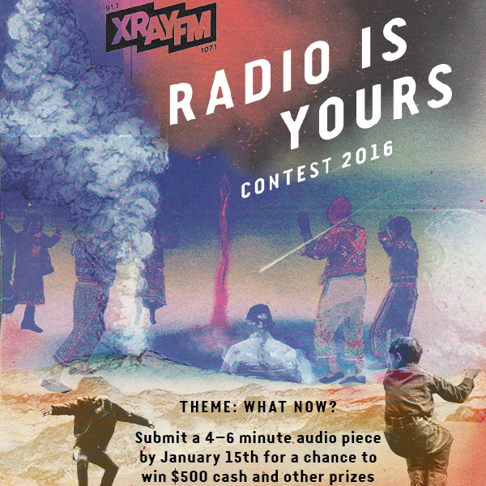
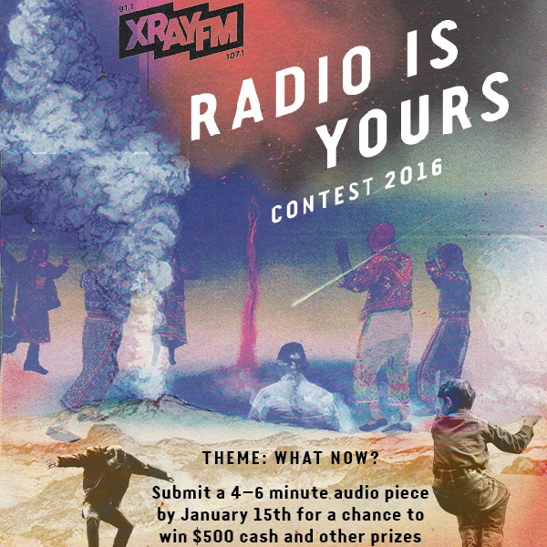
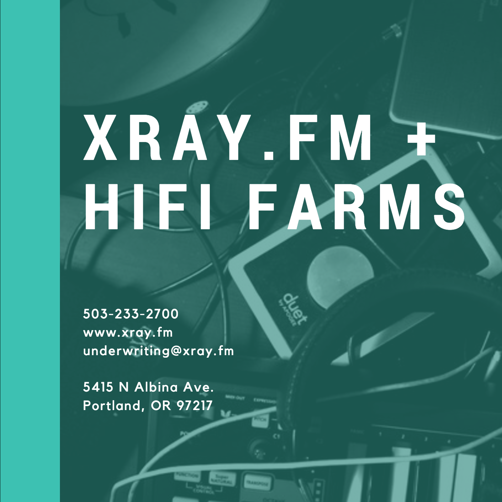

- Content + Research Strategy
- Social Media Engagement
- Copywriting
- Client Management
- HTML + CSS
- Project Management
Projects
XRAY Featured Artist | Multichannel Marketing

Design by Kyle Mayfield


We were searching for a way to collaborate with Grapevine Outdoor to create a campaign that would both increase brand awareness for XRAY.FM and also reach a new audience for Grapevine Outdoor. Launched integrating marketing campaign to highlight Portland’s up-and-coming musicians with a rotating monthly feature. Promoted campaign through social media, digital billboard, blog, on air promo, and newsletter. Reached engagement rate of __%
Radio is Yours Contest | Project Management
 


Design by Piper Hayworth & Ashley Vaughn
We were searching for a way to engage more people interested in storytelling and public affairs to submit to our annual audio storytelling contest. We recruited local graphic designers to create engaging imagery that reflected cultural, political and hyperlocal milestones of 2016. Received an increase of __% in submissions.
Willamette Week Best of Portland | Community Enagement


Managed marketing campaign for Willamette Week’s annual poll of the best in the city of Portland. Worked with limited budget to cross promote with other polling nominees for social media and newsletter endorsement. Won “Best Radio Station” in Portland for 2nd year running and increased social media following by ___ within a __ period.
Discogs + XRAY Sessions | Content Curation

Collaborated with online music database Discogs to increase brand awareness through social media blast of exclusive video content. XRAY Sessions features exclusive, live performance of Portland’s local and touring musicians. Videos released quarterly, and resulted in a reach of ____.
XRAY.FM + Hifi Farms | Client Management


Local grower looking for a way to advertise while supporting local media, while also reaching communities of color. Offered sponsorship bundles that integrated traditional station sponsorship, event advertising, and promoted content.
XRAY.FM | Social Media Management
Managed social media for XRAY channels, including various campaigns for fundraising, increased brand awareness, ticket giveaways, special events, and more. Included integration with Mailchimp newsletters, on-air promotion, Google AdWords, Facebook Advertising, physical advertising (newspaper, magazine, digital billboard, movie theater, and more).